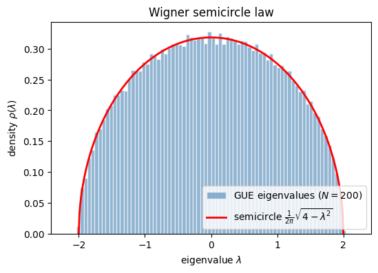

When a large Hermitian matrix is filled with random Gaussian entries, drawn from the Gaussian Unitary Ensemble, its eigenvalues do not spread out arbitrarily. As the size grows they pack into a fixed shape, the Wigner semicircle supported on the interval \([-2,2]\), and the details of the individual entries wash out. This convergence to a single limiting spectral density holds across a wide range of entry distributions.
A convenient way to characterize the semicircle is through its moments, the averages of successive powers of the eigenvalue. Because the semicircle is symmetric about zero, every odd moment cancels. The even moments are more interesting, and they turn out to be the Catalan numbers \(C_k = \tfrac{1}{k+1}\binom{2k}{k}\), a sequence that appears all over combinatorics.
The appearance of the Catalan numbers is more than a curiosity, because they count non-crossing pairings of points, and the very same non-crossing pairings organize the Weingarten calculus used later to evaluate Haar integrals over unitaries. The spectral shape of random Hermitian matrices and the algebra of random unitaries are speaking the same combinatorial language. Reading off the lowest moments gives \(m_2 = 1\) and \(m_4 = 2\), and their ratio \(m_4/m_2^2 = 2\) reports a tail lighter than a Gaussian would have, a consequence of the hard edge where the semicircle stops.
The notebook evaluates the low moments by a trigonometric substitution and matches them to the Catalan sequence.
Mathematical background
For a Wigner matrix with entries scaled so the spectrum stays of order one, the empirical eigenvalue density converges to the semicircle law
The origin is a moment expansion of \(\mathbb{E}\!\left[\tfrac1N \mathrm{Tr}\,H^{2k}\right]\) into closed walks on the matrix indices. At large \(N\) only the walks that pair their steps without crossing survive, and the number of non-crossing pairings of \(2k\) objects is exactly \(C_k\). The first values \(m_2 = 1\), \(m_4 = 2\), \(m_6 = 5\) are \(C_1, C_2, C_3\). This is the spectral analogue of the Gaussian Wick theorem with non-crossing pairings in place of all pairings, and it is the entry point to free probability, where the semicircle plays the role the Gaussian plays for independent variables.
The density \(\rho_{\mathrm{sc}}(\lambda)\) is an even function: \(\rho_{\mathrm{sc}}(-\lambda) = \rho_{\mathrm{sc}}(\lambda)\). For odd \(k\), the integrand \(\lambda^k \rho_{\mathrm{sc}}(\lambda)\) is odd on the symmetric interval \([-2, 2]\):
Combinatorially, \(C_k\) counts the number of non-crossing pair partitions of \(2k\) elements, the same objects that appear in the Weingarten calculus of Part 3.
Part (d): Kurtosis
The excess kurtosis is characterized by the ratio:
\[
\frac{m_4}{m_2^2} = \frac{2}{1} = 2 < 3.
\]
A Gaussian has \(m_4/m_2^2 = 3\) (mesokurtic). The semicircle is platykurtic: it has lighter tails because the spectral density has compact support \([-2, 2]\), eigenvalues cannot fluctuate beyond this hard edge.
GUE Monte Carlo (N=200): m₂ = 0.9990, m₄ = 1.9956, m₄/m₂² = 1.9995
Catalan moments confirmed.
Code
%matplotlib inlineimport matplotlib.pyplot as plt# GUE eigenvalues with the normalization that places the spectrum on [-2, 2].rng = np.random.default_rng(0)N_fig, n_mat =200, 100fig_evals = []for _ inrange(n_mat): G = rng.standard_normal((N_fig, N_fig)) +1j*rng.standard_normal((N_fig, N_fig)) H = (G + G.conj().T) / (2*np.sqrt(N_fig)) fig_evals.extend(np.linalg.eigvalsh(H))fig_evals = np.array(fig_evals)lam_grid = np.linspace(-2, 2, 400)rho_grid = np.sqrt(4- lam_grid**2) / (2*np.pi)fig, ax = plt.subplots(figsize=(6, 4))ax.hist(fig_evals, bins=80, range=(-2.2, 2.2), density=True, alpha=0.6, color='steelblue', edgecolor='white', label=f'GUE eigenvalues ($N={N_fig}$)')ax.plot(lam_grid, rho_grid, 'r-', lw=2, label=r'semicircle $\frac{1}{2\pi}\sqrt{4-\lambda^2}$')ax.set_xlabel(r'eigenvalue $\lambda$')ax.set_ylabel(r'density $\rho(\lambda)$')ax.set_title('Wigner semicircle law')ax.legend()plt.show()

Takeaway
The even moments of the semicircle are the Catalan numbers, with \(m_2 = 1\) and \(m_4 = 2\). A histogram of GUE eigenvalues fills out the semicircle on \([-2, 2]\), matching the analytic density.
Connections
The even moments of the semicircle are Catalan numbers, and they count the non-crossing pairings of the matrix indices. That same counting is what makes the Weingarten calculus tractable, where Haar averages reduce to sums over permutations and the leading contributions are again the non-crossing ones. The fluctuations around this average density are what produce the level repulsion measured by the spacing distribution.
References
Marchenko and Pastur, Distribution of eigenvalues for some sets of random matrices, Mathematics of the USSR-Sbornik (1967). doi
Mehta, Random matrices, Academic Press (2004).
Anderson et al., An Introduction to Random Matrices, Cambridge University Press (2010).
Płodzień, Information Scrambling, Quantum Chaos, and Haar-Random States, lecture notes (2025). arXiv:2511.14397